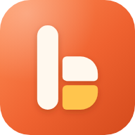

Privacy Policy
Bloc · last changed 31 October 2026
Who runs Bloc
Mauro Villasmil, an IB student at Colegio Madrid, builds and runs Bloc, the website at myib.app and the Bloc iPhone app. Write to him at maurovillasmil1712@gmail.com about anything on this page.
What Bloc stores
- Your account. Your name, your username if you made your own account, when you made it and when you last logged in. Bloc never stores your password itself, only a scrambled version it can check.
- Your planner. The timetable, subjects, dates, tasks, study sessions, study pet and settings you enter.
- Your profile picture, if you add one.
- Chat. The messages you send, the chats and groups you’re in, the people you block and the messages you report.
- Gardens. The gardens you’re in, the invites you send and get, and, once you’re in a garden, a card about your puppy: its name, breed, look, needs, and when it gets sad or turns into a ghost in exam season.
- Notifications in a browser, if you turn them on: the address your browser gives Bloc for notifications, and your next reminders (their titles and times) so the server can send them on time. Turning notifications off or logging out on that browser deletes them.
- Calendar links, if you link a calendar to keep it updated. The link stays in your planner. Bloc’s server fetches the calendar when it updates and keeps no copy.
- A login cookie that keeps you logged in for up to 60 days.
- Security records. Failed log in attempts and a shortened network address, to stop people guessing passwords. Bloc deletes them after a day.
Bloc has no ads, no analytics and no tracking. It never sells your data or shares it with advertisers.
Where it’s kept
Bloc runs on Cloudflare, which stores your account, planner, photo and chats on its servers. Your browser or phone also keeps a copy of your planner, so Bloc opens without a connection.
The iPhone app keeps your next week of classes, your upcoming deadlines and your study pet on your phone for the Home Screen widgets and for reminders. Your phone schedules the reminders itself: they never go through a server.
In a browser, Bloc’s server sends reminders through your browser’s push service (Google for Chrome and Edge on Android, Mozilla for Firefox, Apple for Safari, Microsoft for Edge on Windows). Each message is encrypted so only your browser can read it.
Who can see what
- Only you can open your planner.
- People logged in to Bloc can see your name and profile picture when they chat with you or pick people for a chat.
- People in a chat see its messages. Everyone with an account can read Suggestions.
- People in a garden with you see your name and your puppy’s card. In exam season the card shows when your puppy starts to miss you, so it hints at when you last studied. It never shows your planner, your exam dates or how long you studied.
- Mauro can see account details (name, username, last log in, planner size), and he can back up, restore or reset an account when you ask for help. He can’t read your private chats. He sees a message only when someone reports it.
Chat rules
Bloc has zero tolerance for objectionable content and abusive users. When you use chat, you agree to these rules:
- Be kind. No bullying, insults, hate, threats or sexual content.
- Don’t share other people’s photos, phone numbers or private details.
- Don’t pretend to be someone else.
Bloc blocks some offensive words. Tap any message to report it, and block anyone you don’t want to hear from. Mauro reviews reports within 24 hours. He deletes messages that break the rules and turns off chat, or deletes the account, for anyone who breaks them.
Your choices
- Download your planner: Settings → Export Backup.
- Delete your account: Settings → Delete Account. Your planner, photo, chats and logins go for good. Messages you sent in groups show as deleted.
- Remove your photo: tap your name in Settings.
- Anything else, like a copy of your data or a correction: email Mauro and he’ll answer within a month.
Bloc keeps your data until you delete your account or ask Mauro to delete it.
Young students
Bloc is for secondary school and university students. If you’re under 14, ask a parent or guardian before you make an account.
Changes
If this policy changes, this page shows the new date at the top.